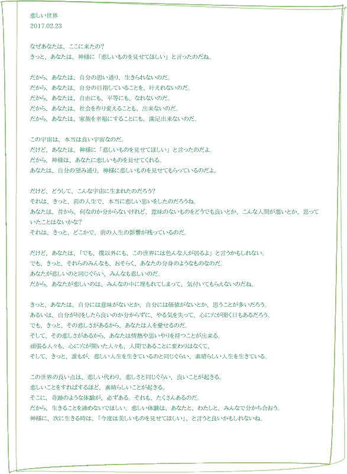

悲しい世界
2017.02.23
----
なぜあなたは、ここに来たの？
きっと、あなたは、神様に「悲しいものを見せてほしい」と言ったのだね。
----
だから、あなたは、自分の思い通り、生きられないのだ。
だから、あなたは、自分の目指していることを、叶えれないのだ。
だから、あなたは、自由にも、平等にも、なれないのだ。
だから、あなたは、社会を作り変えることも、出来ないのだ。
だから、あなたは、家族を幸福にすることにも、満足出来ないのだ。
----
この宇宙は、本当は良い宇宙なのだ。
だけど、あなたは、神様に「悲しいものを見せてほしい」と言ったのだよ。
だから、神様は、あなたに悲しいものを見せてくれる。
あなたは、自分の望み通り、神様に悲しいものを見せてもらっているのだよ。
----
だけど、どうして、こんな宇宙に生まれたのだろう？
それは、きっと、前の人生で、本当に悲しい思いをしたのだろうね。
あなたは、昔から、何なのか分からないけれど、意味のないものをどうでも良いとか、こんな人間が悪いとか、思っていたことはないかな？
それは、きっと、どこかで、前の人生の影響が残っているのだ。
----
だけど、あなたは、「でも、僕以外にも、この世界には色んな人が居るよ」と言うかもしれない。
でも、きっと、それらのみんなも、おそらく、あなたの分身のようなものなのだ。
あなたが悲しいのと同じぐらい、みんなも悲しいのだ。
だから、あなたが悲しいのは、みんなの中に埋もれてしまって、気付いてもらえないのだね。
----
きっと、あなたは、自分には意味がないとか、自分には価値がないとか、思うことが多いだろう。
あるいは、自分が何をしたら良いのか分からずに、やる気を失って、心に穴が開く日もあるだろう。
でも、きっと、その悲しさがあるから、あなたは人を愛せるのだ。
そして、その悲しさがあるから、あなたは情熱や思いやりを持つことが出来る。
頑張る人々も、心に穴が開いた人々も、人間であることに変わりはなくて、
そして、きっと、誰もが、悲しい人生を生きているのと同じぐらい、素晴らしい人生を生きている。
----
この世界の良い点は、悲しい代わり、悲しさと同じぐらい、良いことが起きる。
悲しいことをすればするほど、素晴らしいことが起きる。
そこに、奇跡のような体験が、必ずある。それも、たくさんあるのだ。
だから、生きることを諦めないでほしい。悲しい体験は、あなたと、わたしと、みんなで分かち合おう。
神様に、次に生きる時は、「今度は美しいものを見せてほしい」、と言うと良いかもしれないね。
もう一つ、今日家で書いた詩があります。デザインはありません。
多様性
2017.02.23
----
僕は、普通の進化論ではない、ちょっと違う進化論を信じている。
それは、弱肉強食や、劣ったものから優れたものが進化した、と言う考え方ではない。
それぞれの種に、それぞれの優れた点があり、それぞれが個性を持って、多様性を獲得するために進化した。
それが、僕の信じる、多様性の進化論だ。
----
最初は、ミミズのような生命だったわけではなくて、平凡な、何の個性も無い生命だった。
最初の最初は、本当に賢い、地球全体のような生命が居たかもしれない。
だが、その生命は、「一人では寂しい」と思ってしまった。だから、増えたいと望んでしまった。
そして、そこから、生命の多様性が始まった。最初の生命は、「色んな生命になりたい」と望んだのだ。
----
良く考えると、どの生命の種にも、優れた点が、少なくとも一つある。
羊には、羊の優れた点が一つはあるだろう。
ロバには、ロバの優れた点が一つはあるだろう。
梅には、桜には、それぞれ、優れた点があるだろう。
僕は、進化とは、劣ったものから優れたものが生まれる、と言うことではなく、平凡なものから個性あるものが生まれる、と言うことだと思っている。
----
それに、恐竜は絶滅したけれど、1億6000万年は生きていた。
そんなに物凄く長い年月を生きてきたけれど、昆虫なんか、もっとはるかに長い年月を生きている。
それを、たった何万年かしか生きていない、人間より、劣ったものだと言えるだろうか？
生命は、多様性を増し、たくさんの種を作り、色んな優れた生命を生み出すだろう。
でも、それは、後の方が優れているのだ、と言うことでは、決してないはずだ。
----
そして、種だけではなく、人間に関しても同じだ。
優れた遺伝子の方が、劣った遺伝子より価値があるわけではない。
全員に価値があり、個性があり、そこで見出すべきものは、可能性なのだ。
人よりも、馬鹿だからと言って、劣っていると考えないでほしい。本当は、馬鹿だからと言って、あなたの個性が無いわけではない。
あなたには、必ず、一つは優れた点がある。それが、あなたの個性、あなたの価値、あなたの進化なのだ。